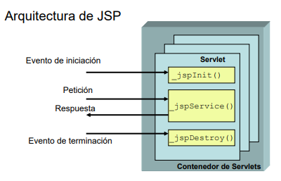

Introducción a JavaServer Pages
Definición
La tecnología JavaServer Pages permite generar contenido Web dinámico como, por ejemplo, archivos HTML, DHTML, XHTML y XML, con el objetivo de incluirlos en una aplicación Web. Por lo cual los archivos JSP son una forma de implementar contenido de páginas dinámico del lado del servidor. Los archivos JSP permiten a un servidor Web como, por ejemplo, Apache Tomcat les permite añadir contenido de una manera dinámica a las páginas HTML antes de enviarlas al navegador que las solicita [1].
Cuando un archivo JSP se envía a un servidor web que consiste en un motor de servlet, es preprocesado por un servlet que se ejecuta en el servidor. Esto contrasta con JavaScript del lado del cliente (en código), que se ejecuta en el navegador. Las páginas JSP se utilizan para tareas que se realizan mejor en el servidor, como acceder a bases de datos o llamar a beans Enterprise Java [1].
Puede crear y editar archivos JSP en un editor HTML agregando su propio texto e imágenes usando HTML, etiquetas JSP o JavaScript con código fuente Java en etiquetas de scriptlet. Los archivos JSP suelen tener una extensión de archivo .jsp. La especificación JSP también recomienda dar a los archivos de fragmentos JSP la extensión de archivo .jspf. Si no sigue esta convención, el validador JSP tratará su fragmento JSP como un archivo JSP independiente normal y es posible que obtenga errores de compilación[1].
Para usar una biblioteca de etiquetas JSP 1.2 personalizada, puede importar la biblioteca de etiquetas .tld y los archivo .jar a su proyecto y usarlos o asociarlos como un proyecto de biblioteca web. También puede hacer referencia al archivo TDL usando el URI [1].
<!DOCTYPE HTML PUBLIC "-//W3C//DTD HTML 4.0 Transitional//EN">">
<html >
<head>
<title>Mi primera página JSP</title>
</head>
<body>
<h1>
Hoy es:
<%= new java.util.Date() %>;
</h1>
</body>
</html>
Para ejecutar la página, simplemente colóquela en una aplicación web (como Tomcat).
aplicación web/RAÍZ). No tiene que estar en un directorio específico como
Ocurre en servlets, pero se puede mover a cualquier directorio donde se coloque
normalmente en HTML [2].
La última versión de la especificación JSP es 2.0, que es bastante nueva (Tomcat 4.x implementa la versión anterior, 1.2). Como puede ver, esta es la especificación para la API de Servlet, específicamente la versión 2.3 [2].
JSP es excelente para generar páginas con mucho contenido estático. servlet Debe contener muchas declaraciones del tipo que realizan la misma función. Salida HTML usando out.println() . Por el contrario, los servlets son mejores Páginas con tareas con poca salida, datos binarios o mucho contenido variable[2].
Se recomienda una combinación de ambas tecnologías para proyectos más complejos. Por lo cual nos ayudara para el procesamiento de información y JSP y poder presentar datos al cliente [2].
Bibliografía
[1] “Tecnología JSP (JavaServer Pages) - Documentación de IBM.” https://www.ibm.com/docs/es/rsar/9.5?topic=files-javaserver-pages-jsp-technology (accessed Aug. 11, 2022).
[2] “Introducción a JSP,” JSP Básico, Mar. 2021. http://www.jtech.ua.es/j2ee/2006-2007/doc/sesion08-apuntes.pdf (accessed Aug. 11, 2022).
Arquitectura de JSP
• El propósito de JSP: es proporcionar una manera más declarativo, más guiado a manera de realizar una presentación que la lograda con servlet.
• Las páginas JSP: se utilizan en un proceso que involucra dos fases:
1. Fase de conversión dinámica realizada en servlet crea o modifica una página JSP.
2. Etapa de la respuesta a la solicitud cumplida cuando se carga la clase del servlet generado contenedor de servlets.
• En la segunda fase: para atender concurrentemente al procesamiento de peticiones,el servidor comienza a procesar la solicitud luz (hilo) para cada cliente ejecute el método jspService().
• El método _jspService(): No se puede anular por otros métodos definidos es por el programador, pero en su lugar puede hacer que personalice la inicialización y la terminación métodos jspInit() y jspDestroy()[1].

Bibliografía
[1] V. J. Sosa S Java Server Pages and C. el Servidor Java de Páginas Java Server, “Java Server Pages (JSP)”.
Acciones
En JSP existen varios mecanismos para incluir elementos externos en la página actual o
redirigir la petición hacia otra página
• La directiva include permite insertar código en la página antes de que ésta se transforme en un servlet por lo cual esto le permitira reutilizar fragmentos de código JSP, HTML.
• La acción <jsp:include> Puede pegar la salida de otra página JSP. tenga en cuenta que contiene la salida generada por el código JSP, no el código en sí.
• La acción <jsp:plugin> permite la integración de applets que usan Java 2.
• La acción <jsp:forward> se utiliza para redirigir la solicitud a otra página JSP.
La directiva include
Es el equivalente al #include del lenguaje C. su sintaxis es:
<%@ include file="fichero" %>
El código se incluye en el servlet generado, por lo que el fragmento de código incluido es habilitado en la página actual. Así que puedes usar esta directiva para definir constantes, generando encabezados HTTP [1].
El problema con esta directiva es que el estándar no requiere un contenedor JSP para el reconocimiento cambia automáticamente en los archivos incluidos, por lo que si cambia uno puede ser necesario forzar una recompilación de las páginas JSP que las contienen [1].
La especificación JSP recomienda que si la página incluida no es una página JSP válida por
sí sola (por ejemplo, porque utiliza variables que se confía que se hayan declarado
previamente) se utilice la extensión "estándar".JSPF (JSP fragment) y se coloque en un
directorio no público del contenedor JSP (por ejemplo, WEB-INF, que no es accesible desde
el cliente, pero sí desde la directiva)[1].
La acción <jsp:include>
Esta acción incluye la salida generada por otra página que pertenece a la misma aplicación web. La solicitud se redirige a la página que la contiene y la respuesta generada es: Incluida en lo generado por el main. Su sintaxis es: [2].
<jsp:include page="URL relativa" flush="true|false"/>
El atributo de descarga hace que el flujo de salida de la página principal debería ser enviado al cliente antes de enviar la página contenedora. En JSP 1.2, este atributo es opcional y su valor predeterminado es falso. Requerido en JSP 1.1 y siempre debe ser verdadero (Obligar Vaciar el búfer fue problemático porque una vez hecho, no se puede hacer ya los escribieron así que haz una redirección o ve a una página de error encabezamiento)[2].
Esta acción tiene ventajas sobre la directiva del mismo nombre. La página contenedora no fuerza una recompilación de "principal". Sin embargo, sólo la página de grabación tenga acceso al JspWriter "principal" y no puedo generar encabezados (por ejemplo, no puede crear cookies)[2].
Por defecto, la solicitud reenviada a la página contenedora es la solicitud original pero se le pueden agregar parámetros usando la etiqueta jsp:param. Por ejemplo:
<jsp:include page="cabecera.jsp">
<jsp:param name="color" value="YELLOW" />
</jsp:include>
La acción <jsp:plugin>
Esta acción se utiliza para incluir subprogramas portátiles e independientes del navegador.
Utilice bibliotecas Java 2 (Swing, Collections, Java 2D, etc.).
Algunos navegadores antiguos (Explorer 5.x,
Netscape 4.x,...) son para versiones anteriores a Java 2 [3].
La acción <jsp:forward>
Esta acción se utiliza para redirigir una solicitud a otra página JSP dentro de la misma página. Una aplicación web diferente a la actual un ejemplo de su sintaxis básica es:
<jsp:forward page="principal.jsp"/>
Cualquier salida generada hasta ahora desde la página actual se descarta (se borra el búfer)en el se produce una excepción si no se utiliza el búfer de salida [3].
Al igual que en el caso de <jsp:include>, se pueden añadir parámetros a la petición original para que los reciba la nueva página JSP:
<jsp:forward page="principal.jsp">
<jsp:param name="privilegios" value="root" />
</jsp:forward>
Bibliografía
[1] “Tecnología JSP (JavaServer Pages) - Documentación de IBM.” https://www.ibm.com/docs/es/rsar/9.5?topic=files-javaserver-pages-jsp-technology (accessed Aug. 11, 2022).
[2] “R. Casado-Vara, “Parallel and Distributed Systems-237-J2EE-JSP, Serviets y Strusts,” 2019.
[3] “Tutorial de JSP (10) : action include. « JTagua.” https://jtagua.wordpress.com/2010/10/02/tutorial-de-jsp-10-action-include/ (accessed Aug. 11, 2022).